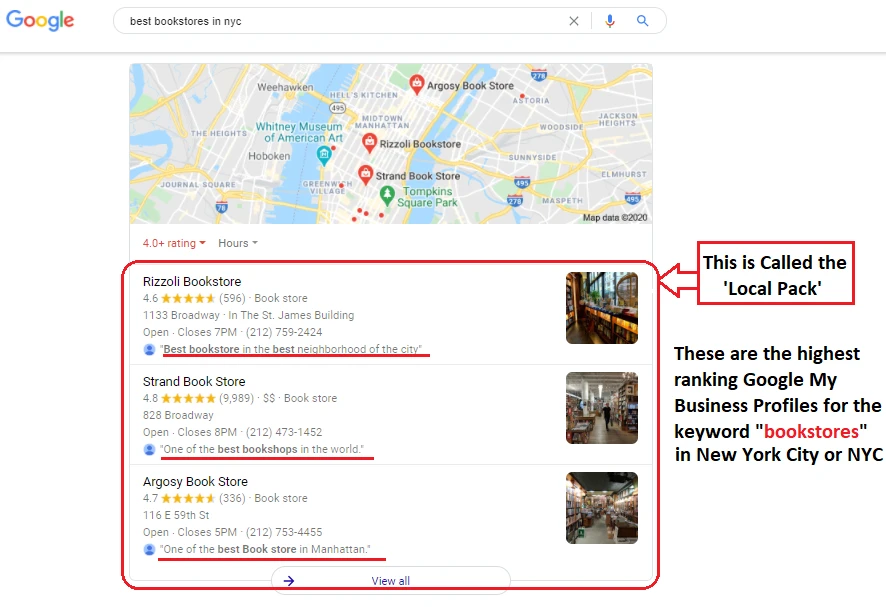
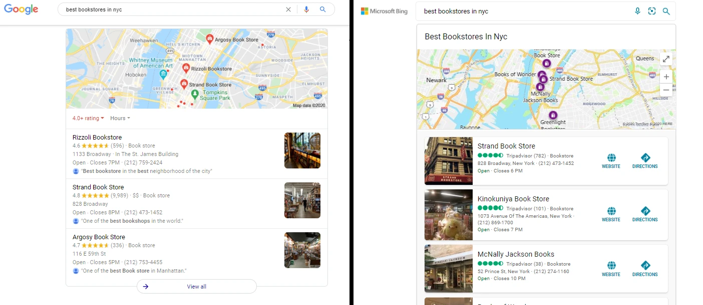
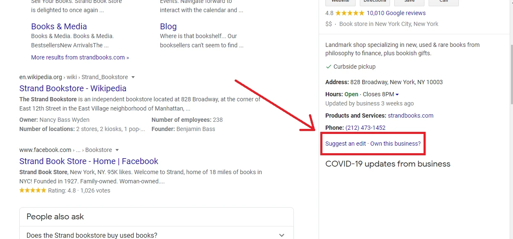
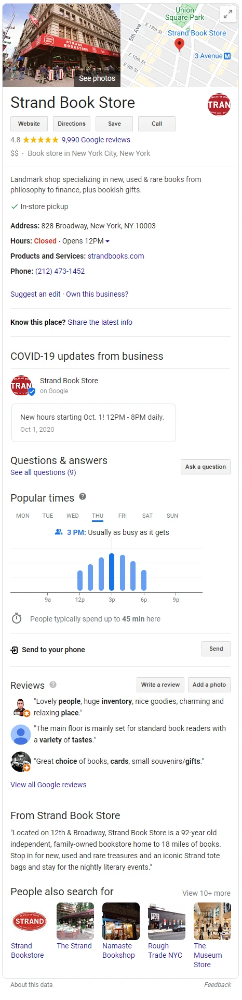

Local SEO Quick Introduction
What is Local Search Engine Optimization?
Local SEO is combining a set of tools, data, research and strategy, to improve your online rank and presence whether you are selling products or offering services.
Local Search Analytics
Understanding the intent of your target audience: To find out what your customers are looking for in your particular niche, then you have to put yourself in the same spot as them and go on Google to see what are they looking for. Perform a couple of searches with your product or service in mind, add a location with your search query, this can be your address or in a general area, like a city, county etc. For example, you are a new book shop owner in New York City, who would like to find out what are the best bookstores in NYC? Type that into the search bar and hit enter. Do some scouting around, open up a few Google My Business profiles as shown in the image below, open up some of their sites, get familiar with what your competition is doing. This will prove useful later, when you start doing keyword research and optimization.

Next, research your keywords, you can use any keyword research tool to find out what the average search volume is then, make sure that you have implemented these keywords both in your website and listing profile. You will want to have this done before setting up your website or listing as it will be easier to add them to your content before publishing it.
Optimizing your listings
Am I eligible for a listing profile?
Eligible businesses
In order to qualify for a Business Profile on Google, a business must make in-person contact with
customers during its stated hours.
There are some exceptions:
ATMs, video-rental kiosks, and express mail dropboxes are permitted. If you add these locations, you must include contact information for customers to get help. Seasonal businesses, like an ice-skating rink only open in winter months, are eligible. These businesses must display permanent signage at their location year-round.Virtual Kitchens are permitted. Virtual Kitchens are professional food preparation and cooking facilities set up to prepare delivery-only meals via third-party services. They are also referred to as Ghost Kitchens and Cloud Kitchens. A Virtual Kitchen should create their Business Profile as a service area business.
Ineligible businesses
The following businesses are not eligible for a business listing:
Rental or for-sale properties such as vacation homes, model homes, or vacant apartments. Sales or leasing offices, however, are eligible for verification. An ongoing service, class, or meeting at a location that you don't own or have the authority to represent. Lead generation agents or companies.
Google, Bing or Apple? Where to set up my listing?
For starters, Google is your best bet, it's the best optimized and user friendly way. And to be honest, Google is the biggest search engine so, that's where most of your traffic will come from. Once you understand the basic principles of how listings work, you can move on to Bing Places or Apple Maps since it's pretty much the same principles. But yeah, you can only do Google and you'll be good.

How to claim your listing?

If you are the owner of a certain physical office, store or a shop that offers services, odds are, your business is already on Google. Google uses its users feedback, to enable it to create business profiles online automatically, or, any owner of a business can go online and create it himself, see below. It can also use information from other sites, like Yelp, TripAdvisor, etc.
To find out if Google has already created a listing for your business, type your store name and address in the search bar, hit enter and voila! If there is one, great, if not, no cause for concern, you can create it yourself, which is very simple and straightforward process and takes up only a few minutes.

First, if you have the business profile of your store open on Google, go and click on Own this business? link. If the listing hasn't been claimed by anyone else, then you can simply follow the steps and fill in your information and, in about a week(takes longer outside the US), Google will send you a Google My Business postcard that contains a pin number needed to verify that you are indeed the owner of the location, hence gain access to your Google My Business profile.
what checks to perform as soon as you have verified your listing
Once you log in, you may check your information, make the necessary changes, and click on the update button.
ADD IMAGE OF GOOGLE MY BUSINESS VERIFIED PROFILE
Make sure to head into the info tab and check if your name, address, phone number and schedule matches your physical location. Next, when someone searches for a store or business online, they usually like to see photos of the location, what it looks like outside, inside, products, if you offer some. So, once logged in your Google My Business profile, you can go to Photos, and upload a few clear photos of your business, make sure your profile photo features your store front, add your logo and add some photos of the inside or the products that you offer. Once that is done, you can go ahead and update your website, if you have one, which at this point, I'm just going to assume you do.
Now to wrap up our Local SEO post, a few remainders to keep in mind, so you can stay on top of your game
- Manage Your Reputation
- Write FAQ
- Update and maintain your schedule
- Write description
- Post updates about upcoming events
Includes replying to your business reviews, this enables your customers to have a sort of a way to connect and communicate with you.
This will come in handy for when someone has a question about your business.
If you don't work on holidays, make sure to let your customers know.
In a few clean and beautiful words describe your business, how long have you been open, some history and that should do it.
The post options, to create posts about what you have going on, that may include new offers, new services, company news, looking to hire someone, policy changes or just promote your shop by adding photos or videos.